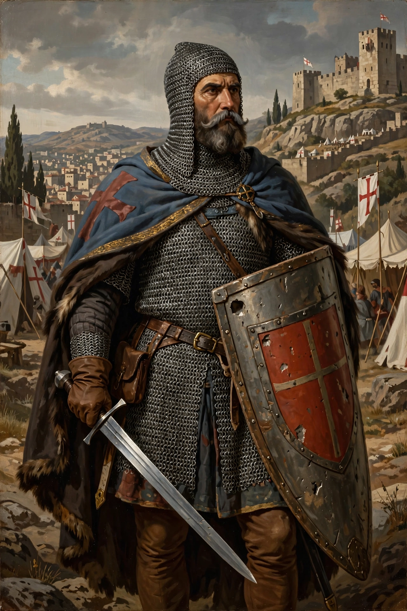

Bohemond I of Antioch (c. 1054 – 3 March 1111), also known as Bohemond of Taranto, was the Prince of Taranto from 1085 to 1111 and Prince of Antioch from 1098 to 1111. He was the eldest son of the Norman Robert Guiscard, Duke of Apulia, and his first wife Alberada of Buonalbergo.

| Bohemond I | |
|---|---|
| Prince of Antioch | 1098–1111 |
| Born | c. 1054, San Marco Argentano |
| Died | 3 March 1111, Canosa di Puglia |
| Spouse | Constance of France |
| Father | Robert Guiscard |
| Mother | Alberada of Buonalbergo |
Bohemond fought alongside his father in campaigns against the Byzantine Empire in the Balkans (1081–1085), winning battles at Dyrrhachium but ultimately failing to hold conquests. Disinherited in favour of his half-brother Roger Borsa in Apulia, he carved out a principality around Taranto.
In 1096 Bohemond joined the First Crusade, playing a leading role at the Siege of Nicaea, the Battle of Dorylaeum (1097), and above all the long Siege of Antioch (1097–1098), after which he kept Antioch for himself despite oaths to return it to Byzantium, founding the Principality of Antioch.
Captured by the Danishmend Turks in 1100 and ransomed in 1103, Bohemond later travelled to Europe, married Constance, daughter of Philip I of France, and launched a failed invasion of Byzantium in 1107–1108, ending with the Treaty of Devol. He died in Apulia in 1111 and was succeeded in Antioch by his nephew Tancred as regent, then his son Bohemond II.
Recreated from memory.